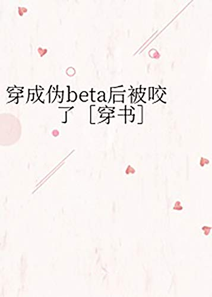

Yue Fei transmigra a una novela y se convierte en el compañero masculino beta carne de cañón del protagonista masculino del libro. Su novio alfa marca un omega porque está siendo engañado por la feromona...
Según la trama original, Yue Fei debería hacer todo lo posible para ponerle las cosas difíciles al omega. Después de todo, él es el verdadero novio del alfa, y son verdaderos amores si se enamoran sin ser controlados por la feromona.
Sin embargo, Yue Fei, quien transmigró a la novela, bostezó: No me molesto en mirar a estas dos personas.
La familia quería que Yue Fei se casara con un rico, porque la primera opción de la otra parte era beta. En la obra original, Yue Fei, quien debería hacer todo lo posible para escapar del matrimonio y vilipendiar a la otra parte, asintió después de escuchar la presentación del intermediario: Sí, me casaré.
Big Shot Gu Wei: Me gusta la gente inteligente y discreta.
Los verdaderos pensamientos de Yu Fei: Al casarme con una familia adinerada, no tengo que preocuparme por el dinero y vivir mi vida lujosamente para siempre, ¿por qué no estar de acuerdo?
Después del matrimonio, un día estaba siendo presionado contra la pared y lo mordieron en la nuca, Yue Fei no estaba tranquilo. ¡¡¿Por qué nadie le dijo que en realidad era un Omega en la obra original???!!!